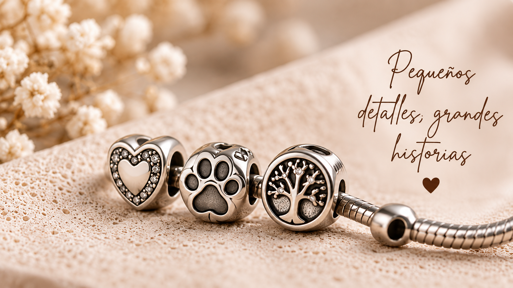
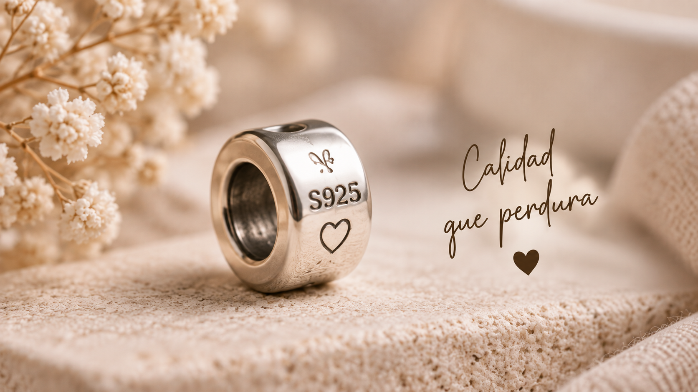
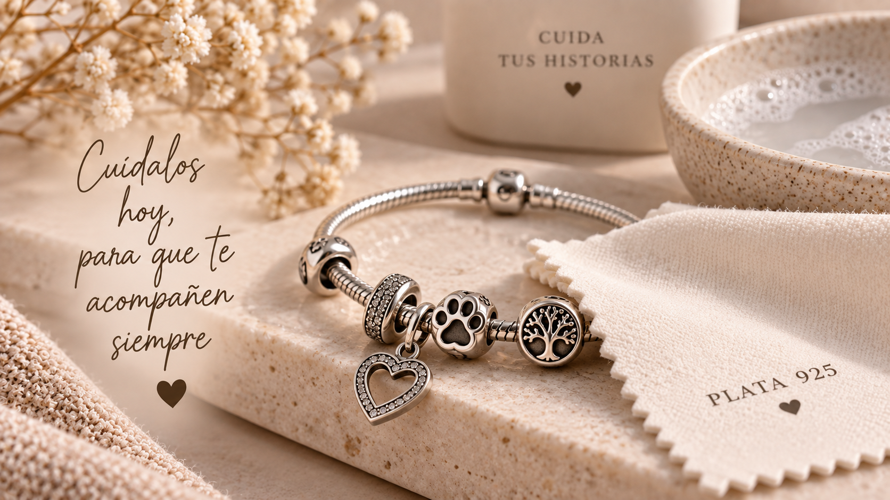

Elegante y versátil
La plata combina fácilmente con diferentes estilos de pulsera y con charms de distintos diseños. Puedes utilizarla tanto en piezas sencillas como en composiciones más llamativas.
Pequeños detalles, grandes historias.
La plata de ley 925 es uno de los materiales más utilizados en joyería. El número 925 indica que la pieza está compuesta por un 92,5 % de plata, mientras que el porcentaje restante corresponde normalmente a otros metales utilizados para aportar mayor resistencia y durabilidad.
En los charms para pulseras, la plata de ley 925 permite combinar un material elegante con una buena resistencia para el uso cotidiano, convirtiéndola en una opción muy popular para piezas que tienen un significado especial.


Las piezas fabricadas con plata de ley suelen estar marcadas con referencias como "925", "S925" o indicaciones similares. Estas marcas sirven como una referencia sobre la composición del material.
Aun así, una marca por sí sola no garantiza el origen o la calidad de una pieza. Si quieres comprobar una joya de forma profesional, lo más recomendable es acudir a un joyero o establecimiento especializado.
La plata combina fácilmente con diferentes estilos de pulsera y con charms de distintos diseños. Puedes utilizarla tanto en piezas sencillas como en composiciones más llamativas.
La plata de ley 925 incorpora una pequeña cantidad de otros metales para conseguir una pieza más resistente que la plata pura, que es un material relativamente blando.
Un charm de plata puede representar una inicial, una fecha, un mes, un animal, una relación o cualquier otro recuerdo importante. Esto permite crear una pulsera completamente personal.
Con el paso del tiempo, la plata puede perder parte de su brillo y adquirir una tonalidad más oscura. Esto es normal y puede producirse por su exposición al aire y a determinadas sustancias.
Para mantener tus charms en buen estado, es recomendable seguir algunos cuidados sencillos.
Para mantener la plata brillante, se recomienda limpiar el charm con un paño suave y seco después de cada uso.
Procura no exponer el charm directamente a productos químicos fuertes, perfumes o lociones, ya que pueden afectar al acabado de la pieza.
Si el charm incorpora circonitas, piedras u otros elementos decorativos, evita el contacto con objetos duros que puedan provocar arañazos.
Cuando no utilices el charm, puedes guardarlo en un lugar seco y protegido del contacto con otras piezas para reducir el riesgo de arañazos.

Si buscas un charm de plata para personalizar tu pulsera, puedes explorar nuestras diferentes categorías y encontrar diseños relacionados con tus gustos, recuerdos o personas especiales.
El sello 925 indica que la pieza contiene un 92,5 % de plata y que el resto corresponde a otros metales utilizados para mejorar sus propiedades físicas.
Sí. La plata puede oscurecerse o perder brillo con el tiempo debido a su exposición al aire y a determinadas sustancias. Una limpieza adecuada puede ayudar a recuperar parte de su brillo.
Limpiarlo suavemente con un paño adecuado, evitar perfumes y productos químicos y guardarlo correctamente cuando no se utilice puede ayudar a mantenerlo en buen estado.
Explora nuestras categorías y encuentra un diseño de plata que encaje contigo, con tu pulsera o con la persona a la que quieres hacer un regalo especial.